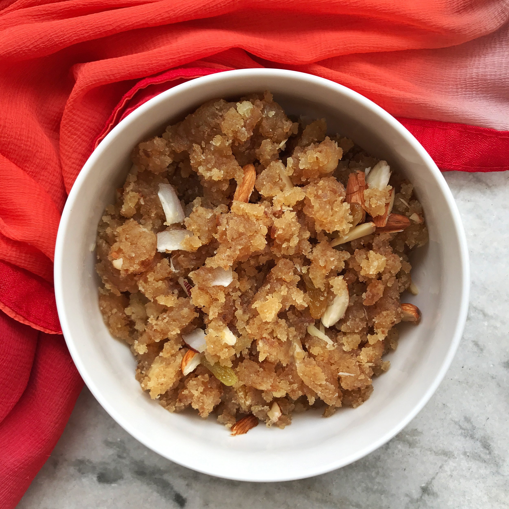

Bread Halwa

Descriptions
Bread halwa is a delicious Indian sweet made using bread, ghee, sugar and milk. Flavored with cardamom or saffron, garnished with cashews this sweet is sure a show stealer. Bread Halwa is one of the most popular desserts served in weddings and other special occasions.
Ingredients
- Bread
- Oil
- Milk
- Ghee
- Sugar
- Water
- Cardamom
- Cashews
Steps
- Take 4 bread slices cut them into small cubes and set it aside. You can add with edges or remove them. I add it these days as it makes no major difference in taste.
- To a pan add 2 tablespoon ghee then 3 tablespoon cashews broken. Fry until golden brown, remove and set aside. In total we need 1/3 cup ghee but we add it little by little.
- Now add the bread cubes.
- Fry the bread cubes until golden brown.
- Add 1 and 1/2 cups boiled milk.
- Mash and cook for 2-3 minutes. Bread does not take much time to cook.
- Once cooked add 1/3 cup sugar.
- Mix well and the mixture turns goey like this. Keep stirring and cooking for 2 minutes.
- Add little more ghee along with 1/4 teaspoon cardamom powder
- Cook until the halwa starts to leave the sides of the pan.
- Now add remaining ghee.
- Give a quick mix.
- Add Ghee fried cashews.
- Bread halwa is ready.
- When you take the bread halwa with a spoon or ladle it should fall off easily without sticking. This is the perfect consistency.